Finished stonework for luxury homes
Gallery of refined masonry projects
Premium patios, walkways, walls, outdoor living, and careful masonry repair.
Gallery
Stone masonry that elevates every entryway.
Each project blends material quality, clean lines, and thoughtful detail for lasting curb appeal.
Stone Mailboxes
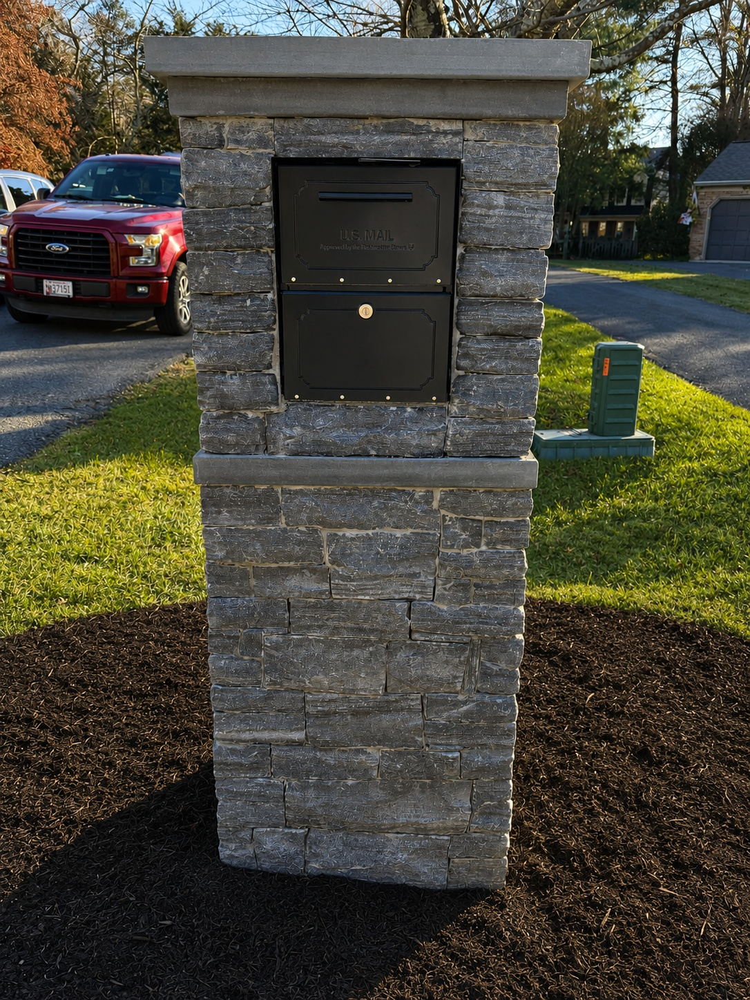

Patios
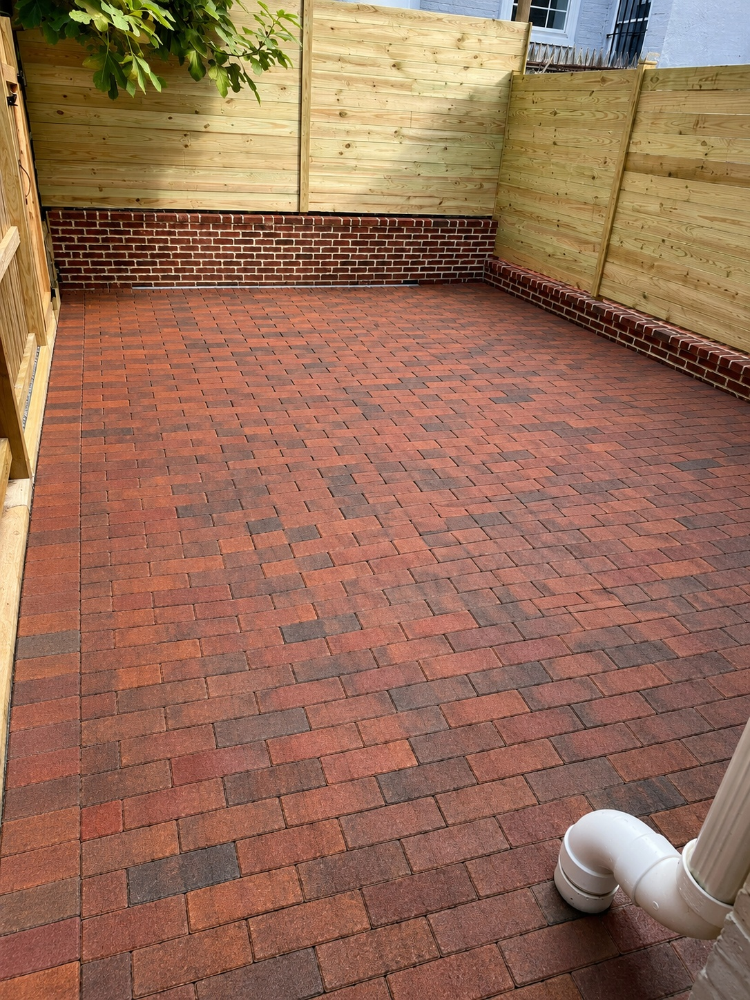
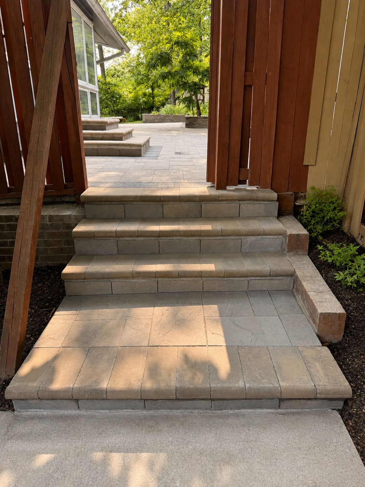
Stone Walkways
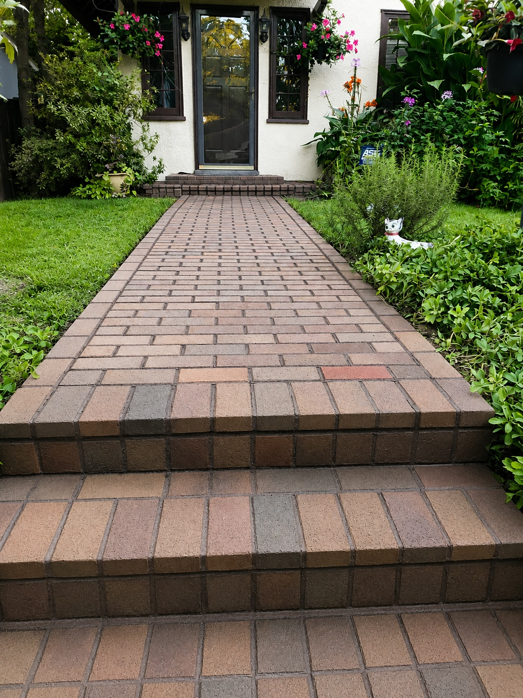
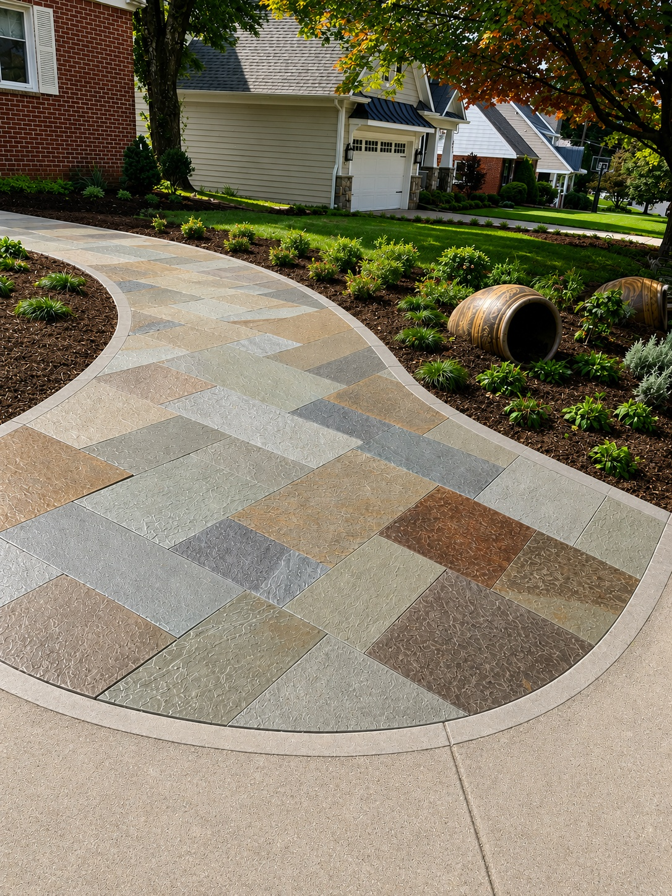
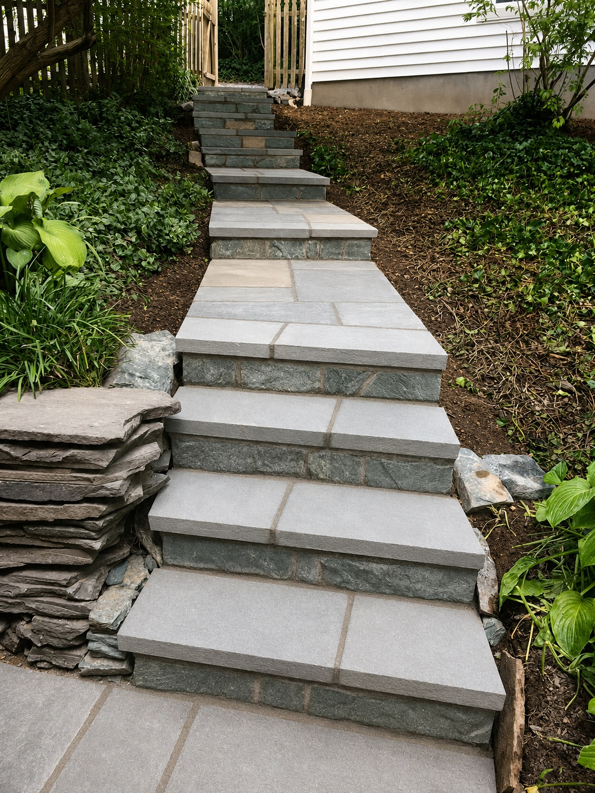
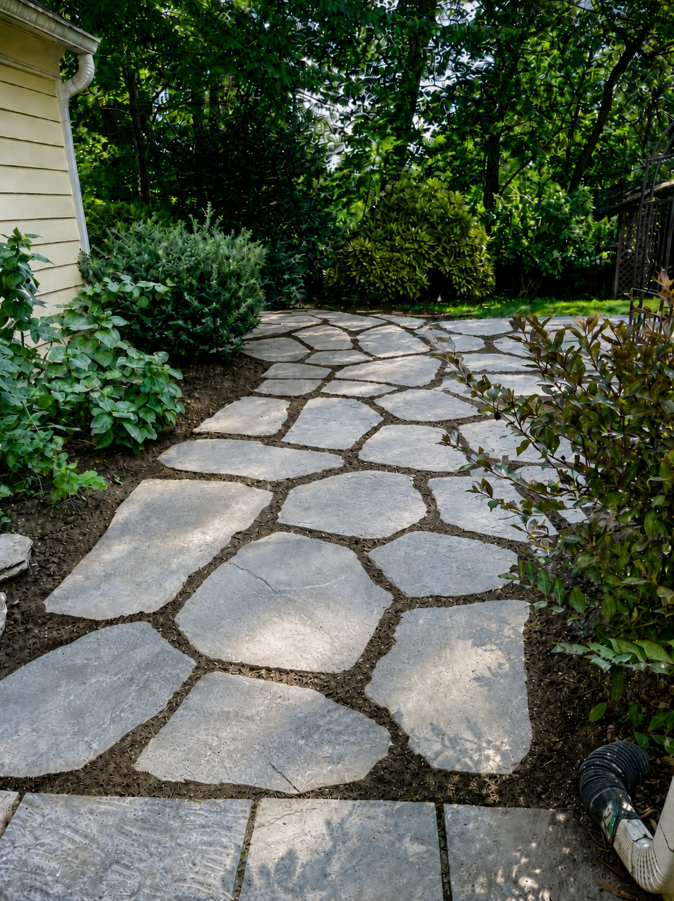
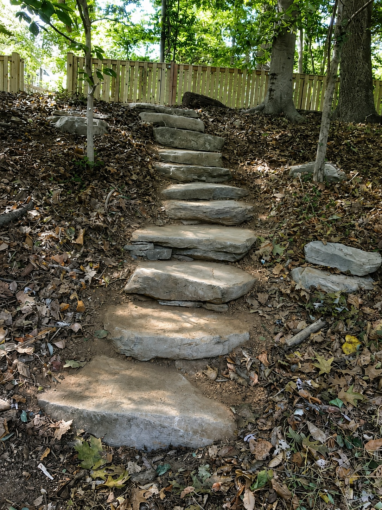
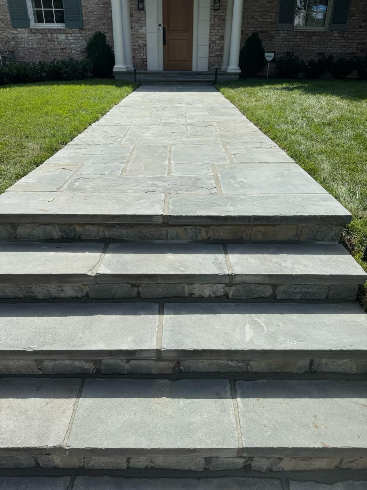
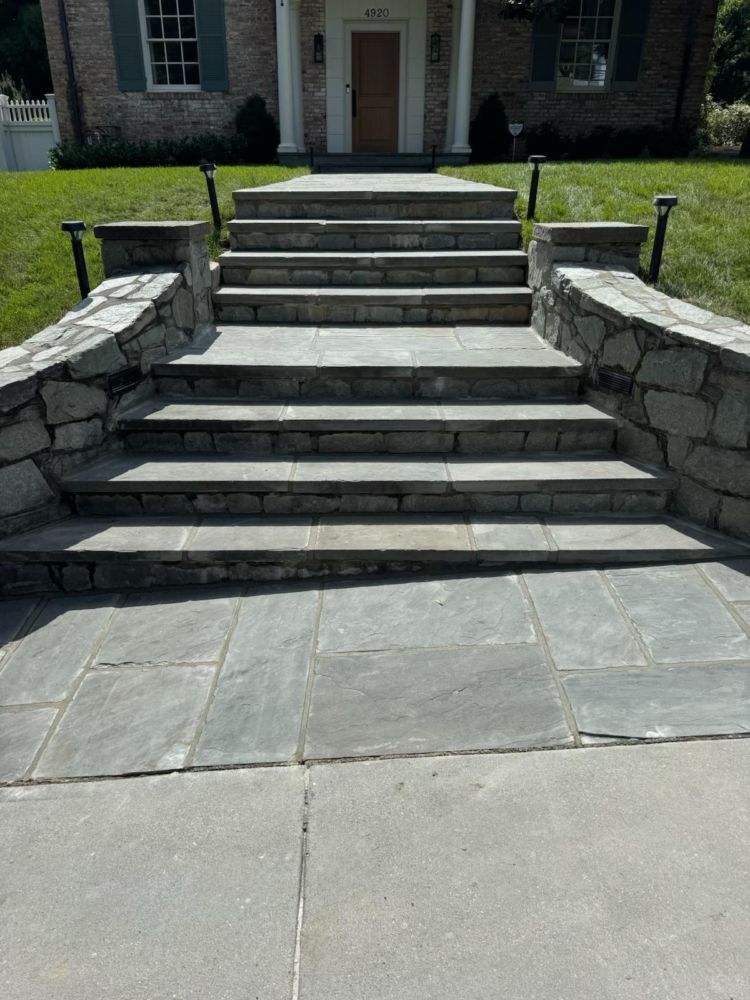
Stone Walls
Outdoor Living
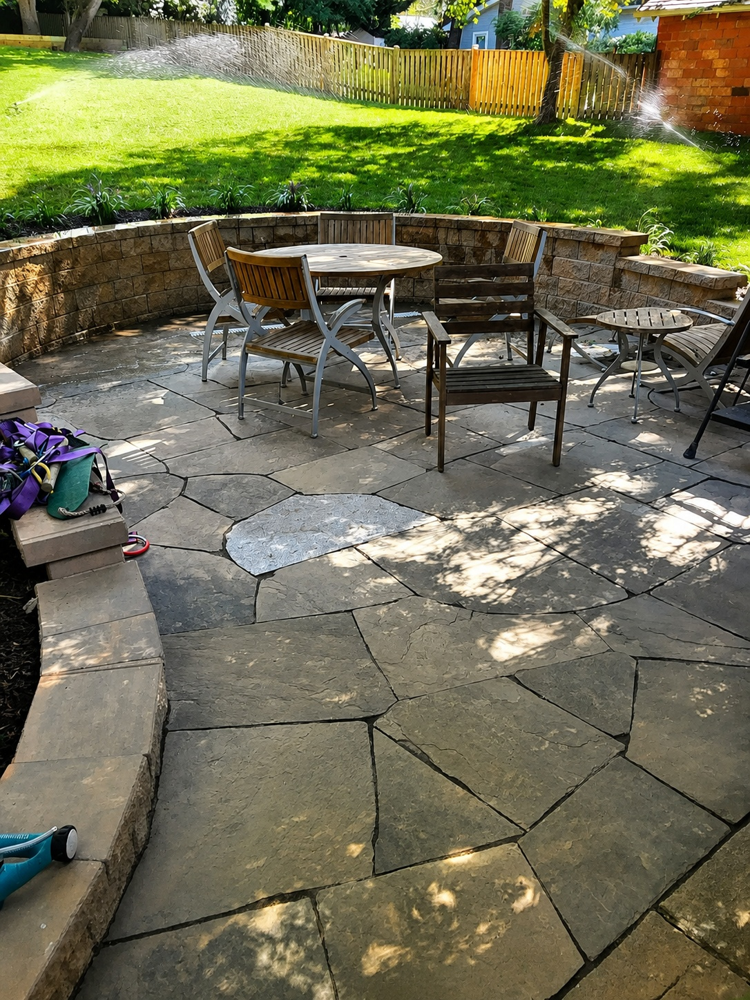
Grass Installation
Clean Ups
Masonry Repairs
Ready to begin?
Contact Flores Landscaping
Request a free estimate for your stone masonry project.
We specialize in luxury stone details that elevate homes without overly busy styling.